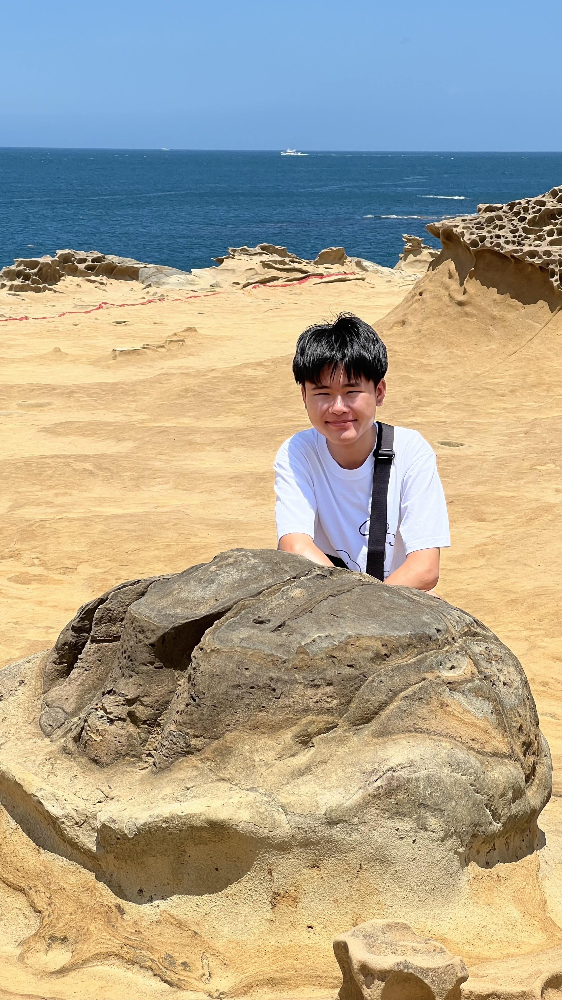

2026 — 2028
University of California, San Diego
B.S. Computer Science
Continuing my computer science studies with a focus on strengthening the fundamentals behind thoughtful software engineering.
A LITTLE CONTEXT / 01
The people. The problems. The discoveries.
Unearthed by the things I build and issues I overcome.

ALAN / OUTSIDE THE CODEORIGIN STORY
A QUESTION OR CURIOSITY
CAN BECOME
A PROJECT.
I'm Alan, a computer science student at UC San Diego with an inherent curiosity for how things work in the world and a desire to turn ideas into a deliverable, impactful form others can consume.
My interest in programming first began with a simple riddle game I created. Seeing people interact with something I had built made me realize how even a few lines of code could create experiences that bring people together and leave long lasting impression. That experience sparked my interest in technology and continues to motivate me today.
I enjoy approaching challenges by understanding the issue at hand, breaking them down, and exploring different ways to solve it. Whether I'm debugging an unexpected issue or crafting something from scratch, I find satisfaction in bringing individual pieces together into a stable, working solution. I experienced this first hand when I was tasked to modernize NKOK's website by applying this mindset in a real business environment, where I worked on improving site functionality, search visibility, performance, and the overall user experience.
Beyond programming, I value the people I work with just as much as the work itself. I enjoy building connections, exchanging ideas, and helping others work through the challenges. I strongly believe that good collaboration and teamwork comes from understanding different perspectives and being willing to support each other. When I'm not in front of a screen, I love to appreciate the world around me, particularly through photography and gaming. Through the lens of a camera, I get to explore and capture different perspectives and moments. Gaming on the other hand allows me to see the creativity of those in the field and the interactive worlds they've built.
I'm continuing to strengthen my foundations in software engineering while exploring areas like backend development and artificial intelligence. I'm always looking for opportunities to learn, contribute, take on unfamiliar challenges, and grow alongside people who are as passionate as me if not more about what they do.
I’m currently pursuing a B.S. in Computer Science at the University of California, San Diego, with an expected graduation in June 2028.
02 / THE PATH SO FAR
B.S. Computer Science
Continuing my computer science studies with a focus on strengthening the fundamentals behind thoughtful software engineering.
B.S. Computer Science · 3.97 GPA (as listed on resume)
Coursework included data structures and algorithms, software development, and discrete structures; participated in the UCR Honors Program.
Office Tech Assistant · Irwindale, CA
Supported day-to-day operations, helped digitize physical records, prepared logistics documentation, assisted in media creation, resolved computer issues for 10+ employees, and managed wesbite operations.
03 / TOOLKIT
A snapshot of technologies and tools reflected in my current work and resume.
WHAT I VALUE
I value clear communication, steady iteration, and being willing to revisit an idea when the evidence points somewhere better. I’m early in my engineering career, and I see every project and team as an opportunity to become a more thoughtful builder.
TAKE A CHANCE ON ME
I'm a UC San Diego undergraduate finishing my BS in Computer Science by June of 2028. If you need someone who doesn't just build what's already here, but inquires at the future, look no further. Contact me.